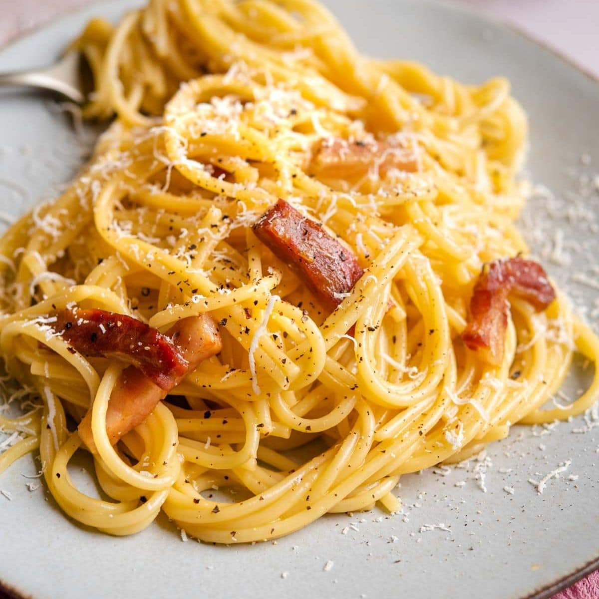

Carbonara Recipe

Spaghetti alla Carbonara
A delicious carbonara recipe to share with family and friends!
Ingredients
- 1 cup Guanciale cut into cubes
- 3 large Eggs
- 15 oz Spaghetti
- 1/3 cup Pecorino Romano
- 2/3 cup Parmigiano Reggiano
- Black Pepper
Steps
-
Bring a large pot of salted water to a boil and add the spaghetti, cook
until al dente (around 7 minutes)
-
Meanwhile, add the guanciale to a hot skillet and fry until brown and
crispy then turn off the heat (do not drain the fat)
-
While the guanciale is frying add the eggs, pecorino and pepper to a
bowl, whisk until well combined
-
Once the pasta is ready, remove it with kitchen tongs to the skillet
with the guanciale and toss so it's well combined in the fat
-
Next, add the egg mixture whilst tossing the pasta to ensure the eggs
don't scramble. Once the sauce turns glossy and creamy it's ready, add
extra pecorino and pepper to serve